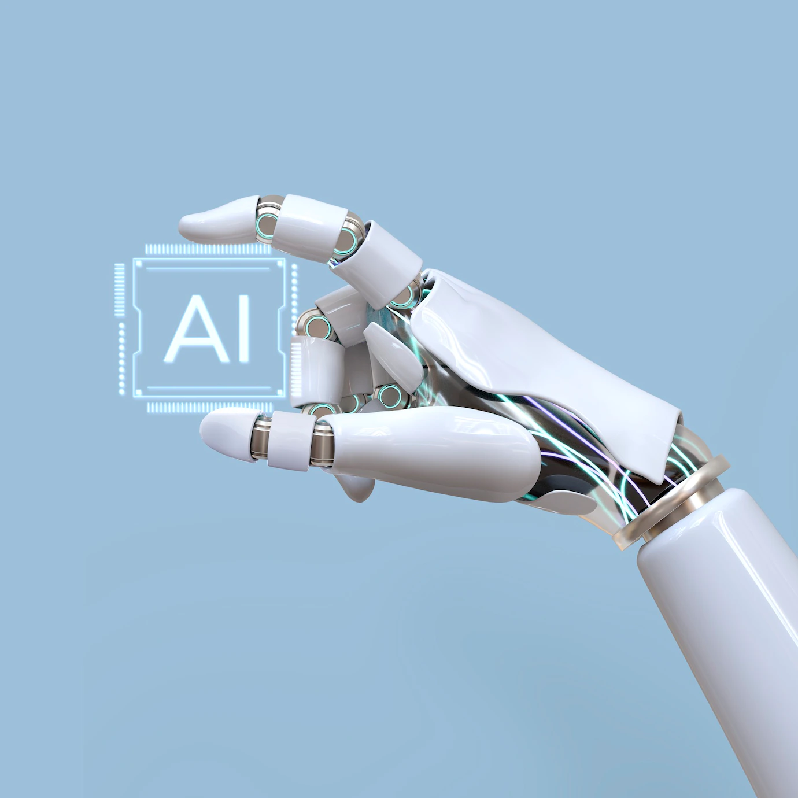

¿Qué es la Inteligencia Artificial?
La Inteligencia Artificial (IA) es una rama de la informática que se centra en crear sistemas capaces de realizar tareas que normalmente requieren inteligencia humana. Estas tareas incluyen el reconocimiento de voz, la toma de decisiones, la traducción de lenguajes, y más. La IA utiliza algoritmos complejos y grandes cantidades de datos para aprender y mejorar a lo largo del tiempo.

Historia
El concepto de IA ha existido desde mediados del siglo XX, pero en los últimos años ha avanzado rápidamente gracias a los avances en el procesamiento de datos y el poder de computación.